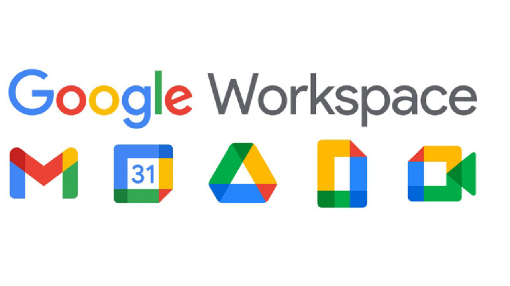
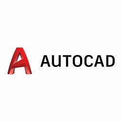
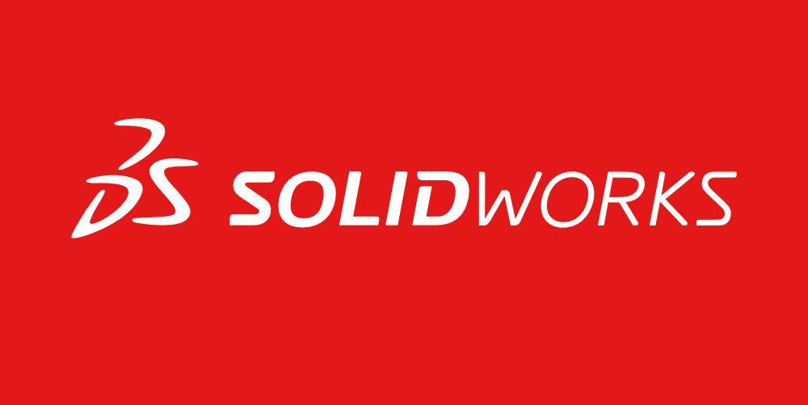

1.Adobe Creative Cloud
Ferramentas poderosas para edição de imagens, criação de gráficos, design e edição de vídeo. Uma suíte de aplicativos para criação de conteúdo visual, incluindo edição de imagens (Photoshop), design vetorial (Illustrator) e edição de vídeo (Premiere Pro). São amplamente utilizados por profissionais criativos para produção de conteúdo visual de alta qualidade.
2. Microsoft Office 365
Uma suíte de aplicativos para produtividade, com ferramentas como processador de texto (Word), planilha eletrônica (Excel) e software de apresentações (PowerPoint). São utilizados para tarefas comuns de escritório e comunicação empresarial.
3. Google Workspace
Uma suíte de aplicativos baseados em nuvem para colaboração, incluindo Gmail, Google Drive, Google Docs, Sheets e Slides. Oferece ferramentas de e-mail, armazenamento de arquivos e colaboração em tempo real.
4.autoCAD e solidWorks
 Software de design assistido por computador (CAD) usados principalmente em engenharia e arquitetura. O AutoCAD é mais genérico e amplamente utilizado em várias áreas, enquanto o SolidWorks é mais focado em modelagem 3D e design mecânico.
5. Visual Studio Code
Um editor de código-fonte leve, altamente personalizável e de código aberto, popular entre os desenvolvedores de software. Oferece suporte para várias linguagens de programação e possui uma grande variedade de extensões para aumentar sua funcionalidade.
6. TensorFlow e PyTorch

Bibliotecas de código aberto para aprendizado de máquina e inteligência artificial. São amplamente utilizadas para desenvolver e treinar modelos de IA em várias aplicações.